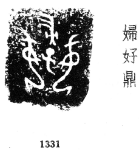
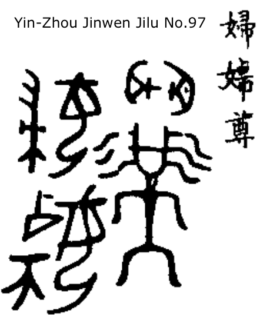
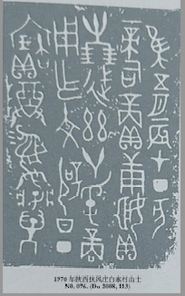
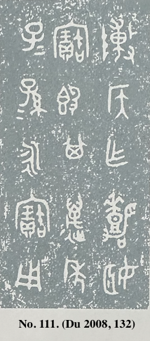
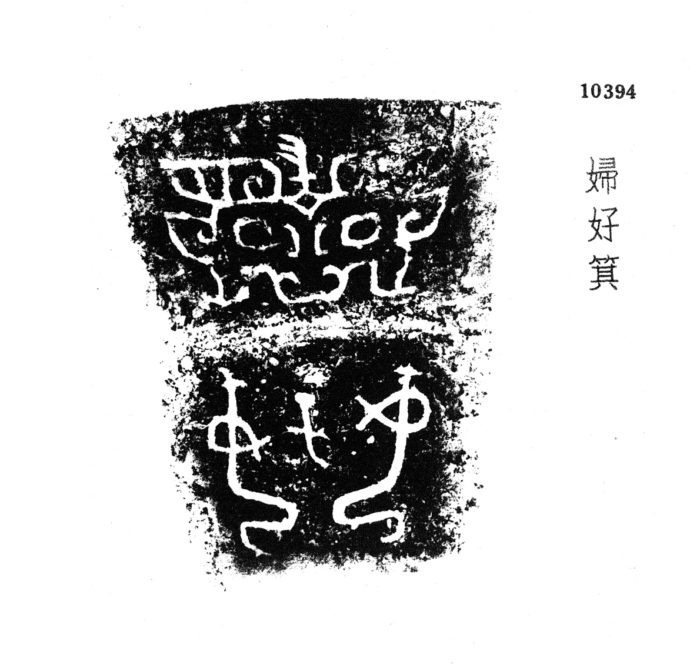

|
Bronze Inscriptions Evolutionary Features |
|||||
|
Bronze |
 |  |  |  | |
|
Text Length |
4 | 7 | ~20 | 497 | 15 |
|
Text Outlook |
Cluttered & Artful |
Lineup & Cluttered Characters |
Lineup & Cluttered Characters |
Lineup & Separated Characters | Lineup & Separated Characters |
|
Date |
1300 – 1041 BC |
1300 – 1041 BC |
1041 – 771 BC |
828 – 782 BC | 771 – 221 BC |
|
Location |
Fu Hao tomb, Anyang (1976) |
Huixian, Anyang (1952) |
Fufeng, Shangxi. |
ShanXi QiShan ZhouYuan 陕西岐山周原 |
Unknown |
|
Ref |
Jichen No. 1331. |
Jilu No. 97 |
No. 076 (Du 2008, 111) |
fr. MaoGong 毛公鼎 |
No. 111 (Du 2008, 132) |
Du, Naisong[杜迺松], 2008, Chinese Graded Bronze Wares Illustration[中国青铜器定级图典]
